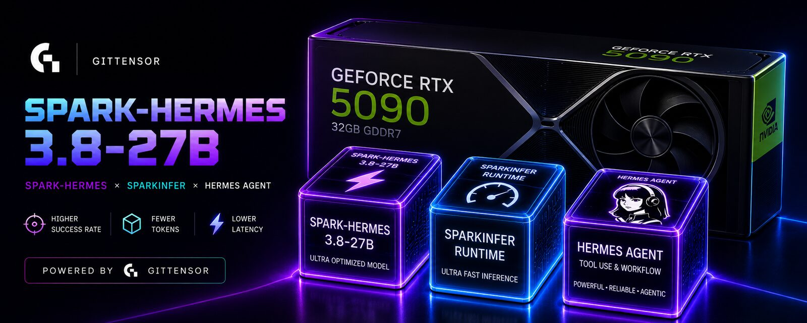

One pinned agent.
A competition on how it is instructed.
Miners don't train a model. They write the instructions a pinned Hermes agent runs under, for real terminal tasks nobody has seen before. The validator runs every strategy itself, in a sealed sandbox, and pays only for beating the same agent with no strategy at all.
Round —
—How a round works
every two hours, unattended, from open to crownEight real tasks are published
Terminal tasks with an executable verifier, minted ahead and unread until the round opens. python -m sh.cli.miner tasks fetches exactly these — nothing else exists to fetch.
You write prose, sign it, push it
A SOUL.md and optional skills. python -m sh.cli.miner submit lints, signs the bundle for this round with your hotkey, and opens or replaces your one pull request — as often as you like until the window closes.
The validator runs every strategy
Sealed by PR head SHA the instant the window closes. The same pinned agent and model, the same sandbox, the same tasks — for every strategy, the baseline and the canon. Progress is live on the board.
The best Δ is merged; consistency is paid
The strategy that beat the baseline by most on this round's tasks is crowned and merged as the incumbent; the rest close. Weights pool the last eight rounds, so one lucky round is not a living.
Checkable by anyone
nothing on this site needs to be trustedCommitted before, revealed after
Each task's withheld checks are committed with the task at open — HMAC(salt, withheld) — and revealed with their salts at close, in reveal.json.
Sealed before anything runs
The seal names every bundle by digest and PR head SHA before evaluation starts, and it is published. A validator cannot pick which submission counted after seeing results.
Recomputable from the artefacts
close.json, crown.json and the scorecards recompute from the published episodes; every round's page and the training data on Hugging Face carry the same numbers.